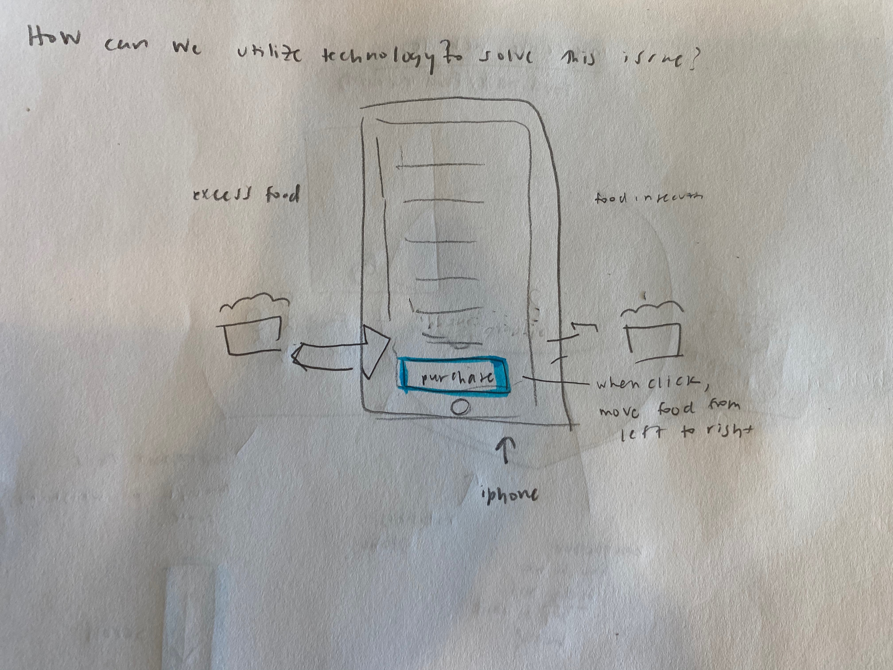

For my final project I will create an interactive website that informs people about the potential and possibilites with utilizing phone apps to help reduce both food waste and food insecurity.
I plan to have the first interactive element be a globe that has both issues "food insecurity" and "food waste" on a weighing scale since food waste is excess food and food insecurity is
not having enough.
After the user scrolls down, there will be content regarding what the issue is. I was thinking of having a lever that is controlling food being exported. When the user
clicks on this, the description can pop up with more information.
Next will come the proposed solution of utilizing apps. I want to represent this while a giant iphone with one of the apps featured ont he screen. Once the user presses "puchase", I want the excess food to transfer to the side of food insecurity to represent a balance between food distribution which helps with food waste and food insecurity.
Lastly, when the user scrolls down there will be content on the findings and effectiveness of these apps to explain why further development could be helpful to contribute to this issue. When the user clicks on food there should be a pop up with information on effectiveness.